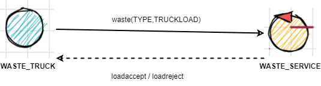

Introduction
Tema finale corso di studio Ingegneria dei sistemi software, Laurea Magistrale Università di Bologna
Requirements
A company intends to build a WasteService for the separate collection of waste, composed of a set of elements:
a service area (rectangular, flat) that includes:
an INDOOR port, to enter waste material
a PlasticBox container, devoted to store objects made of plastic, upto MAXPB kg of material.
a GlassBox container, devoted to store objects made of glass, upto MAXGB kg of material.
The service area is free from internal obstacles, as shown in the following picture:
a DDR robot working as a transport trolley, that is intially situated in its HOME location. The transport trolley has the form of a square of side length RD.
The transport trolley is used to performa a deposit action that consists in the following phases:
pick up a waste-load from a Waste truck located on the INDOOR
go from the INDOOR to the proper waste container
deposit the waste-load in the container
a Service-manager (an human being) which supervises the state of the service-area by using a WasteServiceStatusGUI.
a Sonar and a Led connected to a RaspnerryPi. The Led is used as a warning devices, according to the following scheme:
the Led is off when the transport trolley is at HOME
the Led blinks while the transport trolley is moving
the Led is on when transport trolley is stopped.
The Sonar is used as an ‘alarm device’: when it measures a distance less that a prefixed value DLIMT, the transport trolley must be stopped. It will be resumed when Sonar detects again a distance higher than DLIMT.
{kind=link}
TFRequirements
The main goal of the WasteService software is to allow a Waste truck to deposit its load of TruckLoad kg plastic or glass in the proper container.
The global story can be described as follows:
The Waste truck driver approaches the INDOOR and sends (using a smart device) a request to store the load, by specifyng the type of the material (plastic or glass) and its TruckLoad.
The WasteService sends the answer loadaccept if the final content of proper container will not surpass the maximum value allowed (MAXPB or MAXGB). Otherwise, it sends the answer loadrejecetd and the Waste truck leaves the INDOOR area.
When the load is accepted, the transport trolley reaches the INDOOR, picks up the material, goes to the proper container and settles the material. During this activity, the WasteService blinks the Led
When the deposit action is terminated, the transport trolley excutes another deposit command (if any) or returns to its HOME.
The WasteService must create a WasteServiceStatusGUI that shows to the Service-manager:
the current state of the transport trolley and it position in the room
the current weigth of the material stored in the two waste-containers
the current state of the Led
Requirement analysis
Dopo una prima analisi del testo dei requisiti, sono emersi alcuni punti non chiari
dei quali è stato richiesto chiarimenti verso il committente.
Riportando in seguito
- Possono più WASTE_TRUCK arrivare nello stesso momento all'interno del sistema? oppure entra uno solo quando quello precedente ha liberato INDOOR?
- r1: I truck possono arrivare uno solo alla volta e con loro anche i messaggi di richiesta.
- r2: Però un messaggio di richiesta potrebbe arrivare mentre il Trolley sta scaricando
- In caso di load_accepted il WASTE_TRUCK libera INDOOR subito dopo che il TROLLEY ha prelevato il carico?
- Si, per cui vale la r2
- La WASTE-SERVICE considera il volume dei contenitori attualmente disponibili oppure è impossibile che il TROLLEY non compia il suo carico, quindi in caso di TROLLEY in transito, assieme al volume dei contenitori viene considerato anche il peso del carico in transito?
- Per rispondere positivamente a una richiesta di deposito mentre il trolley sta scaricando, deve essere considerato anche il carico in transito, come se fosse già stato depositato
- LED che è accesso quando il TROLLEY È STOPPED : inteso quando fermato a causa del sonar? oppure anche davanti ai contenitori per scaricare il carico?
- Solo a causa del sonar
-
Se il trolley è in posizione HOME e il sonar rileva una distanza minore di DLIMIT, in che stato vuole che sia il LED?
- Il Led deve essere off. Deve diventare on se il Trolley deve muoversi ma il sonar rileva una distanza < DLIMT
Tramite la seguente tabella identifico in che stato deve essere il led
| TROLLEY \ SONAR | MINORE DLIMIT | MAGGIORE DLIMIT |
|---|---|---|
| HOME | LED OFF | LED OFF |
| WORKING | LED ON | LED BLINK |
core-functionality
The Waste truck driver approaches the INDOOR and sends (using a smart device) a request to store the load, by specifyng the type of the material (plastic or glass) and its TruckLoad .
The WasteService sends the answer loadaccept if the final content of proper container will not surpass the maximum value allowed (MAXPB or MAXGB). Otherwise, it sends the answer loadrejecetd and the Waste truck leaves the INDOOR area.
- WasteService ha conoscenza di MAXPB e MAXGB, in modo da poter inviare le due risposte
When the load is accepted , the transport trolley reaches the INDOOR, picks up the material , goes to the proper container and settles the material.
During this activity, the WasteService blinks the Led- Problema: innesco procedura proattiva di Transport_trolley
(denominato in seguito issue_trolley) - Problema: comunicazione da parte del Transport_trolley della fine del prelievo dei materiali, il truck solo dopo il prelievo libera INDOOR ( Q2 )
(denominato in seguito pickup) When the deposit action is terminated , the transport trolley excutes another deposit command (if any) or returns to its HOME.
- Problema: comunicazione da parte del Transport_trolley della terminazione del lavoro assegnato
(denominato in seguito work_complete) - Problema: al Transport_trolley devono arrivare informazioni riguardanti l'incarico successivo
(denominato in seguito next_work)
Modello dei requisiti
I requisti che non portano ad nessun problema (R1, R2) insieme definiscono il seguente modello dei requisiti
- modello_requisiti
- path : CoreWasteService/src/modello_requisiti.qakt
- 
WasteService è modellato logicamente come attore perchè lavora intrinsecamente a scambio di messaggi
- Reattivo sensibile alle richieste dei Waste_Truck
- Proattivo Commissionare il Transport_trolley a seguito di valutazioni (riguardante alla capacità disponibile) e rispondere alla richiesta arrivata
WasteTruck è un POJO in quanto ente esterno dal sistema in progettazione
alarm
YAGNI, non è il centro del problema in questa fase
statusGUI
YAGNI, non è il centro del problema in questa fase
CHECKPOINT : REQUISITI
Modello dei requisiti
- modello_requisiti
- path : CoreWasteService/src/modello_requisiti.qakt
Per eseguire il modello, rinominare il file in modello_requisiti.qak, eliminare le sorgenti generate e rigenerare il sistema
core-functionality - Punti aperti
When the load is accepted , the transport trolley reaches the INDOOR, picks up the material , goes to the proper container and settles the material.
During this activity, the WasteService blinks the Led- Problema: innesco procedura proattiva di Transport_trolley
(denominato in seguito issue_trolley) - Problema: comunicazione da parte del Transport_trolley della fine del prelievo dei materiali, il truck solo dopo il prelievo libera INDOOR ( Q2 )
(denominato in seguito pickup) When the deposit action is terminated , the transport trolley excutes another deposit command (if any) or returns to its HOME.
- Problema: comunicazione da parte del Transport_trolley della terminazione del lavoro assegnato
(denominato in seguito work_complete) - Problema: al Transport_trolley devono arrivare informazioni riguardanti l'incarico successivo
(denominato in seguito next_work)
alarm : non considerato
statusGUI : non considerato
github: